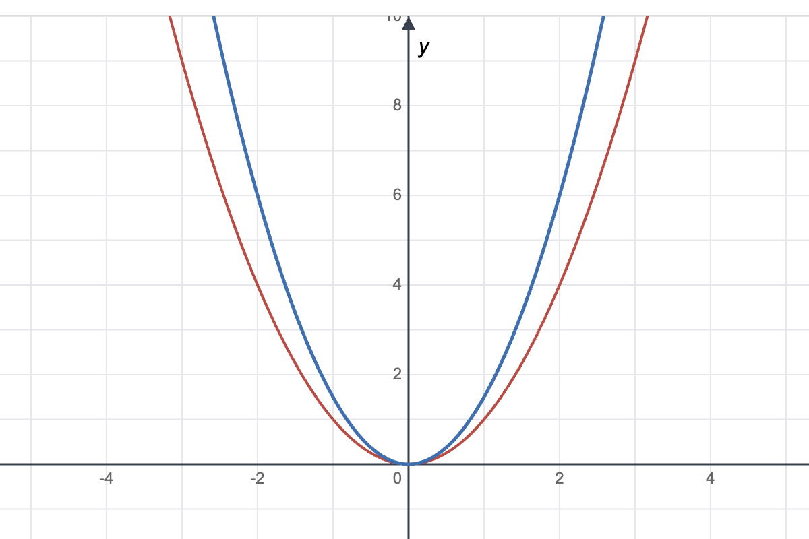
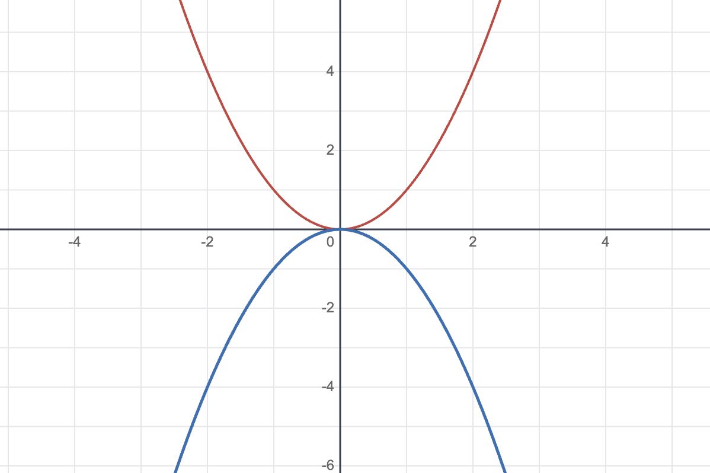
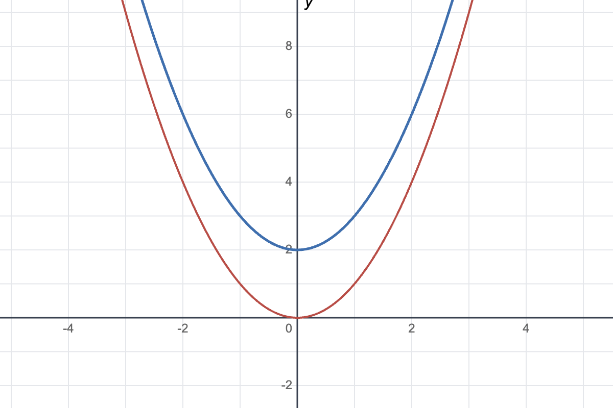
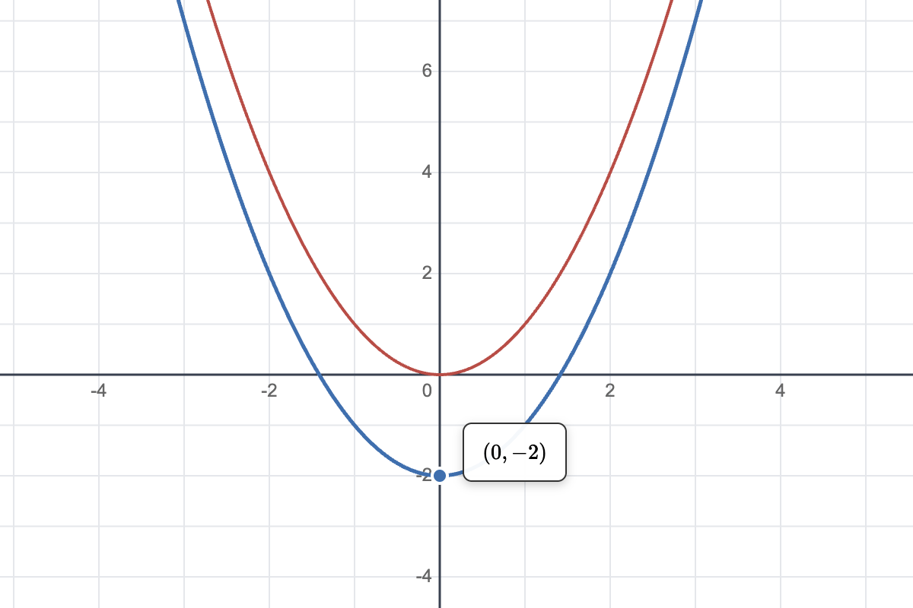
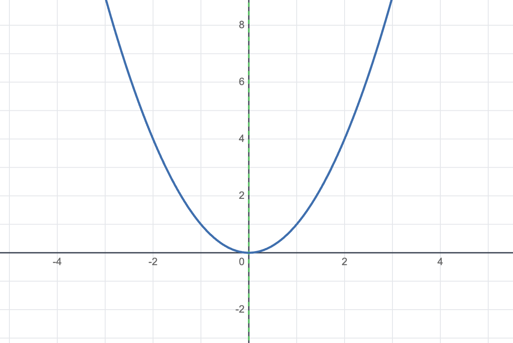
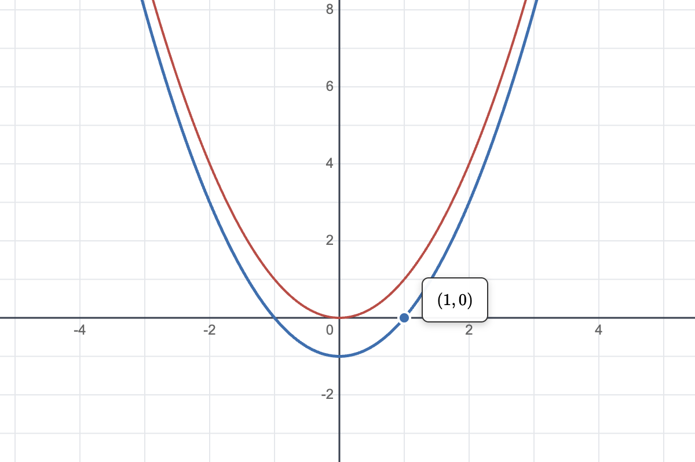

Quadratic Relationships

Quadratic Relationships (Parabola): Wide or Narrow
Launch Interactive

Quadratic Relationships (Parabola): Concavity
Launch Interactive

Quadratic Relationships (Parabola): Vertical movement
Launch Interactive

Quadratic Relationships (Parabola): Vertex of the parabola
Launch Interactive

Quadratic Relationships (Parabola): Axis of Symmetry
Launch Interactive

Quadratic Relationships (Parabola): x-intercepts
Launch Interactive